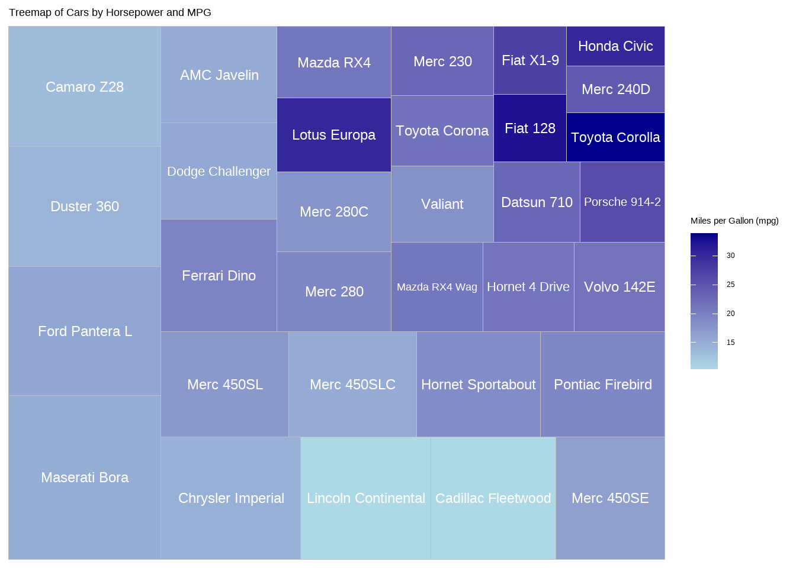
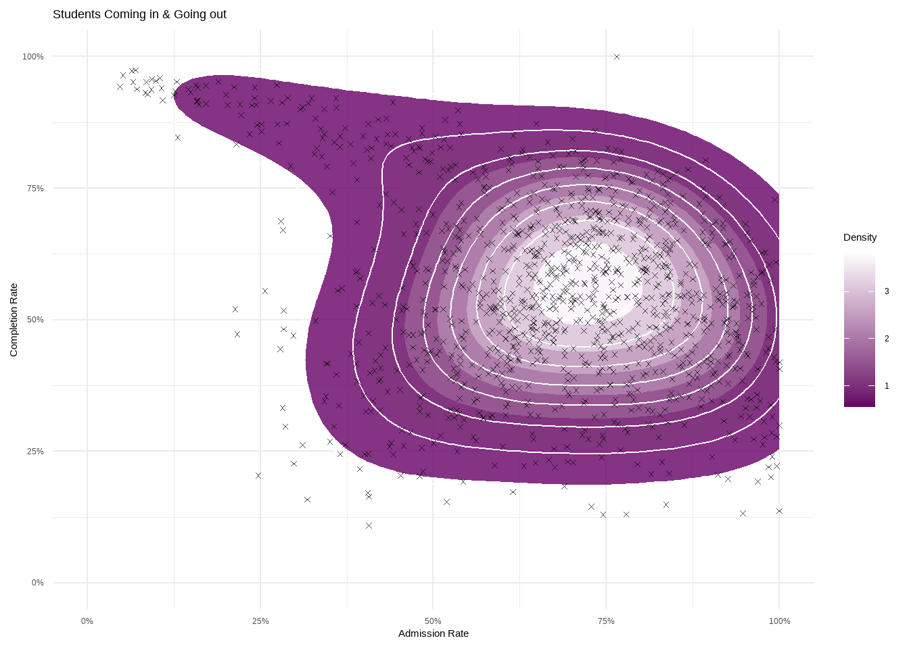

Past Work: Data Visualizations
üìä Dashboard: Interactive tool for teaching confidence intervals
Data: Simulated sampling distributions that can be designed by the user Variables: Population mean, standard deviation, and size. Sampling size and number of groups. Confidence level and adjust categorical values.
This visualization allow allows the mean, standard deviation, and size of the sample population to be adjusted. Then for the sampling distribution, variables such as group size and number of groups can be changed. These interactive features allow a user to problem solve and understand visually what a confidence interval is along with short descriptions of each work.
üöó Treemap: Car performance comparison using
mtcars
Data: 1974 Motor Trend US magazine
Variables: Horsepower, MPG, and Model names
Description: Using a tree plot I constructed a visualization that displays horsepower as the area of each box, MPG (miles per gallon) as the color, and the model name as a label. This visualization clearly displays that with a rise in horsepower there is often a trade off in efficiency.

üé®Generative Art Gallery: aRtsy package

Title: “Bucknell Blue”

Title: “Smoke Signals”

Title: “Geometric Harmony”
ü¶¨ Bucknell Visualization: Exploring Price Disparity in Education
Data: Third Edition of Lock5Data “CollegeScores” Data set
Variables: Net Price, Average Debt, and Median Income
Description: This visualization highlights Bucknell as an institution that has an extremely high tuition but has many students leaving with little to no debt due to the median income being higher. This goes against a natural way of thinking that a more expensive institution would have students with more debt but the high price keeps people who can not afford it from being able to attend Bucknell.
üìö College Data: Completion and Admissions
Data: Third Edition of Lock5Data “CollegeScores” Data set
Variables: College Admission Rates and College Completion Rates
Description: This contour plot shows the relationship between admission rates and student completion by showing the density for where a majority of colleges place and the outlines for each value.
